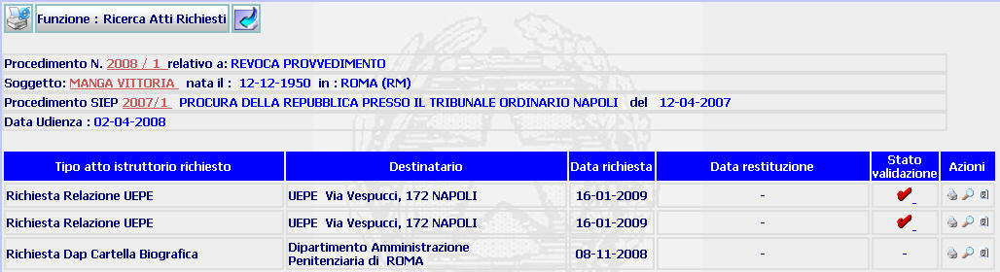

ELENCO RICHIESTE ISTRUTTORIE: La funzione consente di visualizzare l'elenco delle richieste istruttorie effettuate, di accedere alla maschera di dettaglio atto istruttorio, di visualizzare l'elenco solleciti atti istruttori e di generare la stampa dell'atto richiesto.
LE MASCHERE VIDEO
La funzione viene realizzata attraverso la maschera seguente in cui compare l'elenco degli atti istruttori richiesti con riferimento ad un procedimento Sius

COME FARE PER ...
| Per
visualizzare il
dettaglio del procedimento Sius
l'utente deve cliccare sul link
relativo all'Anno/Numero del procedimento Sius evidenziato in
rosso;
|
| Per visualizzare il dettaglio del soggetto l'utente deve cliccare sul link relativo al cognome/nome del soggetto evidenziato in rosso; |

| Per visualizzare il dettaglio del procedimento Siep l'utente deve cliccare sul link relativo all' Anno/Numero del procedimento Siep evidenziato in rosso; |

|
Per
visualizzare
il
dettaglio atto istruttorio
l'utente deve
cliccare sul pulsante
|
| Per visualizzare gli elenco solleciti atti istruttori, l'utente deve cliccare sul pulsante ; |
| Per generare nuovamente la
stampa dell'atto richiesto, l'utente deve cliccare sul pulsante
|
CAMPI
La presente funzione non prevede campi da compilare
PULSANTI
Oltre al pulsante
 facente parte del gruppo di
pulsanti di "Uso Comune" sono
presenti i seguenti pulsanti:
facente parte del gruppo di
pulsanti di "Uso Comune" sono
presenti i seguenti pulsanti:
|
PULSANTE |
DESCRIZIONE |
|
|
A fronte di tale comando, il sistema permette di generare nuovamente, editare e stampare l'ordinanza/decreto emessi e già generati in precedenza. |
|
|
Questo pulsante ha lo scopo di visualizzare il dettaglio atto istruttorio . |
|
Questo pulsante ha lo scopo di visualizzare gli allegati al provvedimento. |
|
|
A fronte di tale comando, il sistema consente di annullare la validazione. |
BOTTONI
Oltre ai comandi funzionali relativi al menù verticale non sono presenti altri bottoni